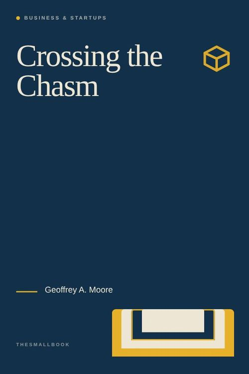

Why Did Rdio Fail?
Beautiful player, brutal market
What happened
Rdio was one of the best designed early streaming services, built by people who understood social listening. Critics praised it while Spotify raced ahead on free tiers, playlists and global deals. Streaming margins were thin and scale decided who could survive them. Rdio filed for bankruptcy in 2015 and sold key assets to Pandora, which later closed the service it tried to build from the remains.
The fatal mistake
Winning taste while losing distribution and cash.
The lesson
In commodity content markets, design is a feature. Scale and rights are the business.
The antidote book

Early adopters and mainstream buyers are different species. The gap between them is where startups die - cross it by dominating one beachhead niche at a time.
READ THE SUMMARY OPEN INTERACTIVE BOOKQuestions people ask about Rdio
Why did Rdio fail? Winning taste while losing distribution and cash.
How much was lost? Bankrupt in 2015
What is the lesson? In commodity content markets, design is a feature. Scale and rights are the business.
Rdio kyun fail hua? In simple English: Winning taste while losing distribution and cash. The cost was Bankrupt in 2015.
Keep digging
More startup failures · Open the full Graveyard
Read the antidote book summary: Crossing the Chasm
Related failures
- Why did 23andMe fail? 2025 · 15 Million DNA Profiles, No Second Act
- Why did Vice Media fail? 2024 · The $5.7B Media Rebel That Died of Believing Its Hype
- Why did Pepperfry fail? 2024 · 10 Years of Furniture E-Commerce, Ended by a Fire Sale
- Why did Lilium Jet fail? 2024 · $1.5B Burned on 36 Electric Jet Fans
- Why did Koo fail? 2024 · India's Twitter Died Waiting for Twitter to Die
- Why did Forward Health fail? 2024 · The AI Doctor's Office Closed Overnight
They paid full price. You get the lesson in simple English.